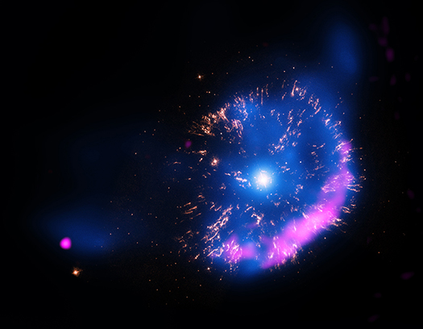

GK Persei (Nova Persei 1901) - Chandra X-ray Observatory
About Me
I am an Astrophysicist with a strong interest in stellar astrophysics, focusing on stellar evolution and its outcomes, such as novae, supernovae, and white dwarfs. My expertise lies at the intersection of observational data analysis and computational problem-solving. I hope to contribute to science and knowledge with my future research ;) .
Technical Skills
Python
Machine Learning (PyTorch)
SQL & NoSQL
Power BI
Data Pipelines
Recent Projects
- Nova Shells & MUSE Data Cubes (UTFSM): Photometric and spectral analysis of multidimensional data.
- 4MOST Instrument Calibration: Developed a Python data pipeline to process large datasets of 1D spectra from SDSS.
- Science Communication (AstroPulso): I wrote sections for the page, including "natal kicks" and "progenitors," among others.